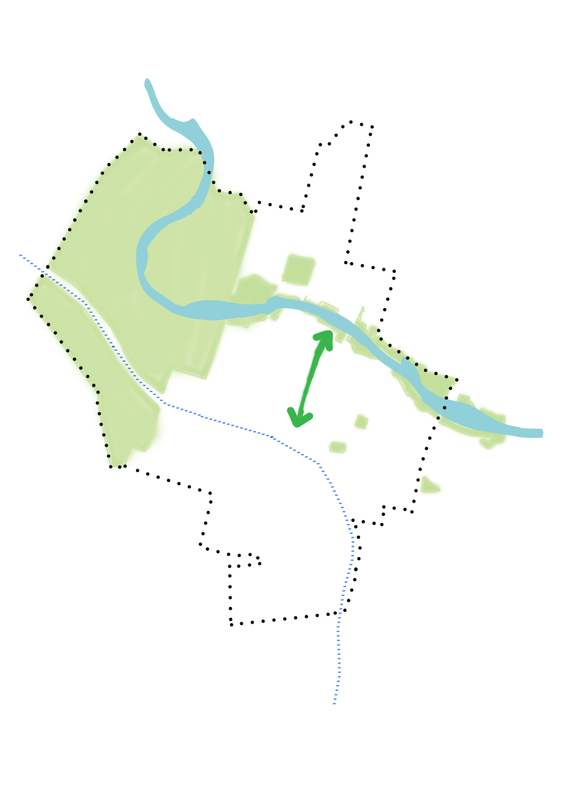
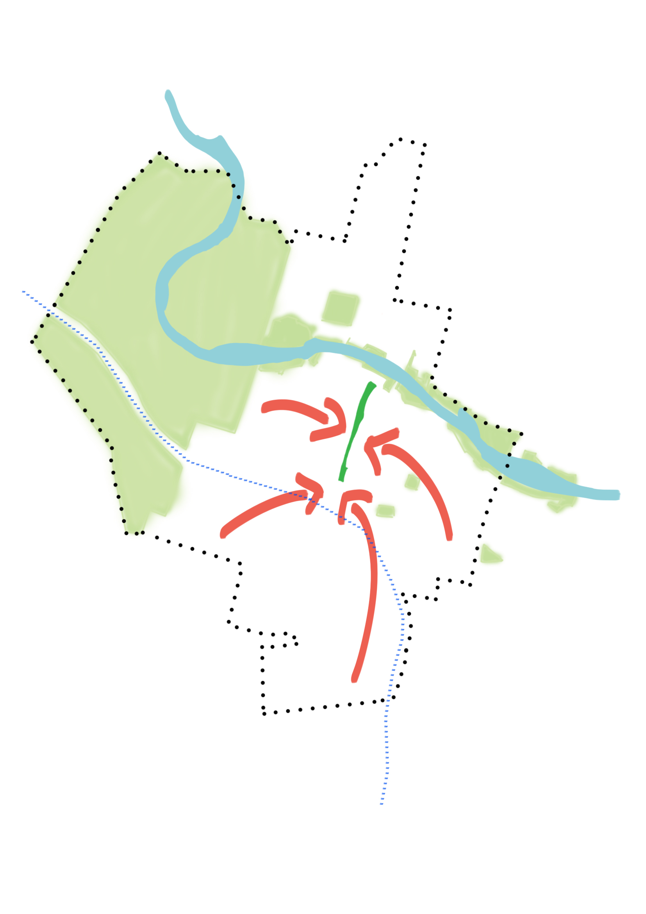
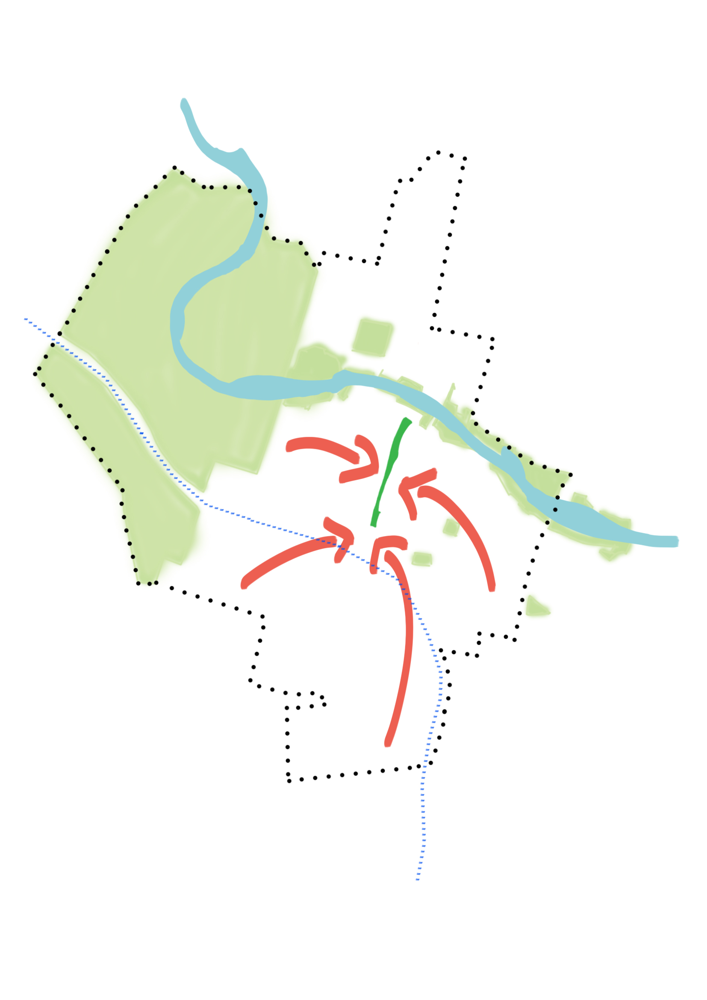
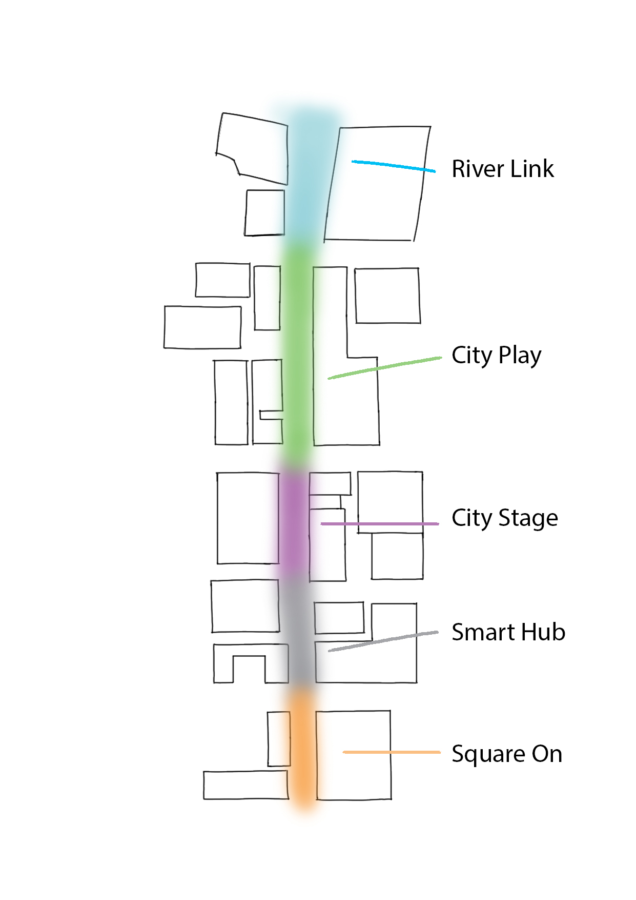
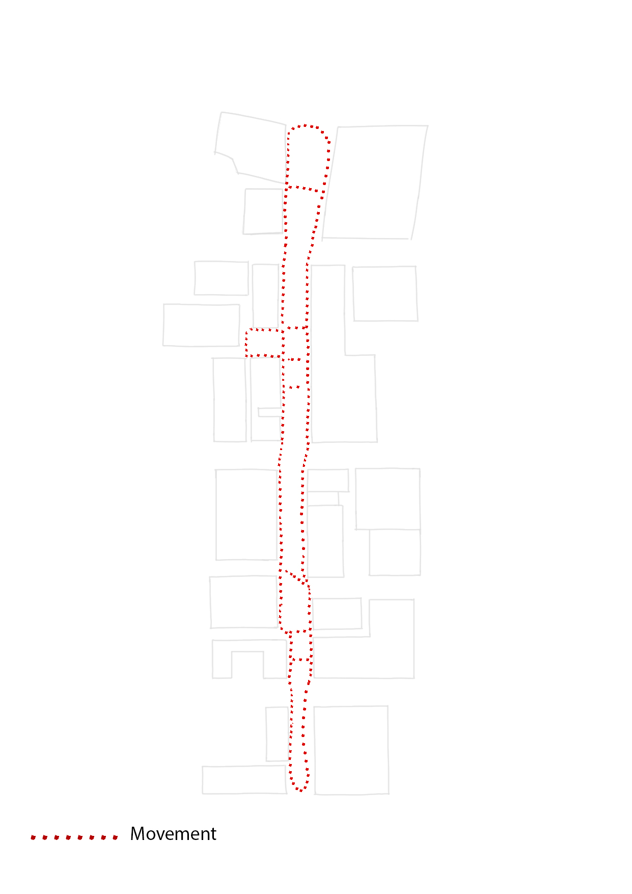

Success
*Connect The Parramatta Square and The River Square in physical and symbolic level.

It has an excellent geographical location and convenient transportation.
 

*It helps against Urban Island effect. Based on the government report, urban area has higher temperature comparing surrounding areas.
There will be multible plants placed along the Civic Link which can be able to mitigate and adapt heat.


*Make a heritage network along the Link providing more opportunities to visit, experience, and share culture. People gonna feel a strong
connection and agreement with this suburb.

*Active and develop adjoining commercial spaces.
- River Link: A critical section of the Civic Link providing a landscape, and the forecourt and entrance of MAAS (Museum of Applied Arts and Sciences).
- City Play: A place for family and visitor to play and celebration.
- City Stage: A core place of the Civic Link designed to support cultural events and attractors.
- Smart Hub: A place to meet, work, share, and learn.
- Civic Place: A place of arrival and depature from the Civic Link.

*Pedestrain has a role in supporting the corridor species and their ecological function.
The shape of the street encourage pedestrain movement enhancing their contribution to biodiversity.

*The Civic Link is providing an opportunity for public to ensure a green spaces in CBD, and workers take advantage of healt and wellbeing benefits.

Data Analysis
*Data of Heat Island Effect when the Civic Link works.
*Activation during the day and night which can be observe form the flow of pedestrain per day.
*Satisfaction of customer after visiting the heritage.
*Traffic condition.
*Maintenance of service.
*Economic benefits.
Arguments
*Safe issue: personal risk might increase during the night-time.
*Lack public transport: causing over-relied on cars and increasing the CO2 emission.
*Difficult to meet the needs of diverse communities.
*Lack heritage protection
*"Over-utilised one area : negative impact on the more diversified and dispersed elements" which means need
create a multi-cores commercial area.